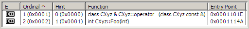
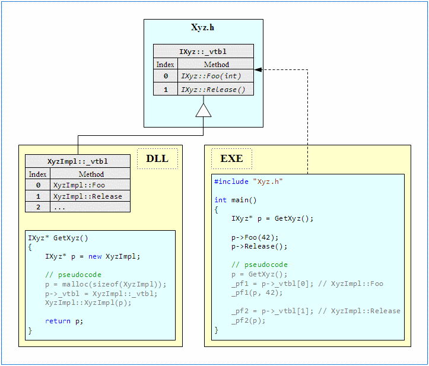

C++调用DLL中的类
介绍
DLL动态调用在Windows中是无所不在的。DLL通过对外提供一个C函数格式的显式清单，对内封装某些小功能进函数函数，外部用户就可以直接调用函数使用功能。因为在WINDOWS开始采用DLL的1980年代，C语言是唯一采用开发工具，所以Win DLL采用C语言格式的函数和数据类型供外部调用。一个DLL可以使用任何语言实现，但为了被其他语言和环境使用，一个DLL函数必须采用最底层的公用的C语言命名与格式。
使用C函数不表示开发人员必须放弃面向对象。甚至C函数也可用于真正的面向对象编程，虽然实现起来很烦冗。而使用者位居全球第二的C++语言也广泛使用DLL。可能是因为在C++的世界中不存在可识别的应用程序二进制函数（ABI-Application Binary Interface），所以C++中的关于DLL与DLL调用者之间的二进制函数的定义更加优良，因此被广泛接受。然而在生产中就会出现不同的编译器所生成的二进制代码互相不兼容，甚至同一编译器的不同版本之间也存在不兼容情况。DLL中输出C++ 类也存在这些风险。
本文目的是展示在一个DLL模块中输出C++类的几种方法。源码中展示了几种不同的对外输出Xyz对象的技术，Xyz对象比较简单，只有一个Foo方法。对象图示如下：
Xyz |
int Foo(int) |
Xyz对象在DLL内部实现，该DLL可被方法分发使用。外部用户可通过以下方式调用Xyz的功能函数：
使用纯C方式
使用常规C++方式
使用高级C++接口方式
XyzLibrary:DLL库项目
XyzExecutable:调用DLL的Win32控制台应用项目
#if defined(XYZLIBRARY_EXPORT) //表示仅在DLL中定义宏为导出
#define XYZAPI__declspec(dllexport)
#else // 在DLL之外即调用端定义宏为导入
#define XYZAPI__declspec(dllimport)
#endif // XYZLIBRARY_EXPORTC语言方式
典型的C语言调用DLL方式是使用不透明的指针或句柄。用户调用一个函数，该函数在DLL内部创建对象并返回该对象句柄。然后用户以该句柄为一个入参来调用其他对象操作函数。Win32 API编程就广泛使用C方式，使用一个HWND句柄来调用Win32底层DLL。Xyz对象的C语言格式输出定义如下：
typedef tagXYZHANDLE {} * XYZHANDLE;
// Factory function that creates instances of the Xyz object.
XYZAPI XYZHANDLE APIENTRY GetXyz(VOID);
// Calls Xyz.Foo method.
XYZAPI INT APIENTRY XyzFoo(XYZHANDLE handle, INT n);
// Releases Xyz instance and frees resources.
XYZAPI VOID APIENTRY XyzRelease(XYZHANDLE handle);
// APIENTRY is defined as __stdcall in WinDef.h header.C方式的调用代码如下：
#include "XyzLibrary.h"
...
/* Create Xyz instance. */
XYZHANDLE hXyz = GetXyz();
if(hXyz)
{/* Call Xyz.Foo method. */
XyzFoo(hXyz, 42);/* Destroy Xyz instance and release acquired resources. */XyzRelease(hXyz);/* Be defensive. */
hXyz = NULL;
}在C方式中，DLL内部还必须提供对象创建与销毁的显示函数。
调用约定：在调用DLL时使用正确的调用约定是很重要的，不匹配的调用约定可能要到运行时才发生崩溃。XyzLibrary使用APIENTRY，这表示调用约定为__stdcall(定义于 "WinDef.h")。
异常处理：在C方式的DLL内部无法抛出类似C++的异常，如果要提示错误，一般采用返回一个特定错误码的办法。
C方式的DLL可被几乎所有语言和环境使用。
C方式的DLL的运行时与调用端的运行时各自独立不依赖，因为资源的请求与释放都在DLL内部完成，所以调用端不会被DLL所使用的CRT所影响。
- 调用端要正确地初始化对象实例并调用匹配的正确方法，如果调用错了，那么编译器无法捕捉到错误。如下：
/* void* GetSomeOtherObject(void) is declared elsewhere. */ XYZHANDLE h = GetSomeOtherObject(); /* Oops! Error: Calling Xyz.Foo on wrong object intance. */ XyzFoo(h, 42); 为了创建与销毁对象实例，显示调用是必须的。调用者经常忘记销毁对象实例，如在退出函数时忘记调用XyzRelease，那么就会发生资源泄漏。一些支持析构与内存垃圾回收机制的现代编程语言可以在C函数之外封装一层，以改善该问题。
如果某对象的方法的返回值或入参需要使用其他对象时，DLL内部就必须为这些新对象提供一些合适的C方式函数。另外一种方案是使用最低层的通用命名，仅使用自带类型(如int,double,char*等)作为返回值的类型和方法的参数。
C++原生方式
几乎每个WIN平台下的现代C++编译器都支持从一个DLL中输出一个C++类。如果仅是输出一个函数或方法，那么和纯C方式的声明格式是几乎相同的，只是在要输出整个类时，就在要输出的类名之前使用__declspec(dllexport/dllimport)声明
// The whole CXyz class is exported with all its methods and members.
//
class XYZAPI CXyz
{
public:int Foo(int n);
};
// Only CXyz::Foo method is exported.
//
class CXyz
{
public:
XYZAPI int Foo(int n);
};不需显式指定，默认编译器对输出的类使用__thiscall调用约定。但由于不同编译器甚至不同版本之间的命名声明方案不同，所以输出的C++类只能在同一版本的编译器下编译出的调用端调用。如下MS Visual C++ compiler编译出的DLL输出类名被乱码化：
使用Dependency Walker解开乱码后的类名如下：

这样，DLL和调用端EXE都要在同一版本的MS Visual C++ compiler下编译，才能保证调用完全正确。
#include "XyzLibrary.h"
...
// Client uses Xyz object as a regular C++ class.
CXyz xyz;
xyz.Foo(42);注意，调用一个输出C++类对象的DLL调用一个静态库文件的方法是完全一样的。
Default constructor
Copy constructor
Destructor
Assignment operator (operator =)
如果DLL中未声明与实现这4个特别成员，那么C++编译器会按默认规则补充显示声明并显式默认实现某些成员。如在CXyz类中，编译器认为constructor, copy constructor, and the destructor默认的就够用了就优化掉了，然后就自动加上了assignment operator成员。
注意：使用__declspec(dllexport)来声明输出类，会告诉编译器整个类里面的所有数据成员，函数成员等，无论显示隐式声明，全都输出。
class Base
{
...
};
class Data
{
...
};
// MS Visual C++ compiler emits C4275 warning about not exported base class.
class __declspec(dllexport) Derived :public Base
{
...
private:
Data m_data;// C4251 warning about not exported data member.
};上述代码编译时会被警告那些未输出的基类和未输出的类的数据成员。所以为了成功地输出DLL中的类，开发者必须要把类相关的基类和定义了相关数据成员的类全部输出。所以，输出基于STF的类就是个很大的工作量了(例如输出一个std::map<>容器可能就需要同时输出几十个内部类)。
异常的安全处理：输出的类可以在DLL中抛出异常在EXE中捕获。因为DLL和EXE使用了同一个C++编译器，用起来和静态库完全一样。
输出的类可以和任何DLL外的其他类使用同样的调用方法
在DLL中抛出的异常可以在EXE中捕获
如果只是在DLL中做一些小修改，可以只重新生成该DLL即可部署使用。不需要重新生成其他模块，这样对于大型项目的生成与部署是很减轻工作量的。
要实现真正的模块分离，可以从把大项目中的一些逻辑模块分离到DLL中开始。这对于优化项目的模块结构是有益的。
DLL中输出的类与EXE耦合性太强，强到可以视DLL为静态库
DLL和EXE必须链接相同版本的CRT。如果DLL和EXE链接到了不同版本的CRT，或链接了static静态CRT，那么在一个CRT实例中请求的资源就会在另外一个CRT实例中释放。这会造成意图操作外部资源的CRT内部冲突，很可能会崩溃。
DLL和EXE必须使用相同的异常处理模式，使用相同的编译器异常处理设置。
输出一个C++类就要输出该类相关的所有东西，包括基类，数据成员定义类等等
C++接口方式
// The abstract interface for Xyz object.
// No extra specifiers required.
structIXyz
{virtual int Foo(int n) = 0virtual void Release() = 0;
};
// Factory function that creates instances of the Xyz object.
extern "C" XYZAPI IXyz* APIENTRY GetXyz();#include "XyzLibrary.h"
...
IXyz* pXyz = ::GetXyz();
if(pXyz)
{
pXyz->Foo(42);
pXyz->Release();
pXyz = NULL;
}C++未特别提出象C#/JAVA一样的interface接口概念，但其实也能声明并实现接口。方法也一样，就是声明一个没有数据成员的抽象类。然后使用另外一个分离类从接口继承并实现接口方法，接口的实现对EXE是隐藏的，EXE只需要关心可以调用什么方法和怎么调用。
方法很简单，一个无成员只有纯虚方法的C++类就是一个虚表，如一个函数指针数组。该数组在DLL内部定义并填充，然后在DLL之外被EXE使用来调用对应函数功能。以下为接口IXyz的使用：

上述图表展示了IXyz接口是如何被DLL和EXE共同使用的。在DLL内XyzImpl类继承IXyz接口并实现其方法。EXE中的方法调用通过一个虚表实际执行了DLL中的对应函数实现。
通用性：上述C++接口可通用于不同的编译器，因为COM机制可在不同编译器中兼容生效。详细地说，在各模块之间使用一个无成员纯虚方法的抽象类就是COM机制暴露COM接口的做法。C++中的虚表概念完美符合了COM标准规范。这并非巧合，C++作为主流开发语言长达二十多年了，广泛应用于COM编程。得益于C++对于面向对象的天然支持，微软决定使用C++作为工业COM开发的主力工具，所以MS会确保COM二进制标准与C++对象模型实现在编译器中保持兼容一致。而其他C++编译器厂商为支持COM机制而不被市场淘汰，自然也就兼容了MS的现成机制。所以通过一个虚接口输出的DLL类在WIN平台下是被各编译器广泛支持的。
使用智能指针：为了确保资源被正确释放，抽象接口提供一个特别的注销实例的方法。调用这个方法是烦冗易错的，就如同纯C方式中开发者经常忘记执行释放资源的显式函数一样。所以经典的C++源码中就经常使用智能指针来实现RAII(resource acquisition is initialization的缩写，意为“资源获取即初始化”。 用白话说就是：在类的构造函数中分配资源，在析构函数中释放资源)。
#include "XyzLibrary.h"
#include "AutoClosePtr.h"
...
typedef AutoClosePtr<IXyz, void, &IXyz::Release> IXyzPtr;
IXyzPtr ptrXyz(::GetXyz());
if(ptrXyz)
{
ptrXyz->Foo(42);
}
// No need to call ptrXyz->Release(). Smart pointer
// will call this method automatically in the destructor.使用智能指针可以确保Xyz对象无论如何都被正确释放。函数可能会因为内部异常而过早退出，而C++可确保在退出之前释放所有本地对象。
#include "XyzLibrary.h"
#include <memory
#include <functional
...
typedef std::shared_ptr<IXyz> IXyzPtr;
IXyzPtr ptrXyz(::GetXyz(), std::mem_fn(&IXyz::Release));
if(ptrXyz)
{
ptrXyz->Foo(42);
}
// No need to call ptrXyz->Release(). std::shared_ptr class
// will call this method automatically in its destructor. 异常的安全处理：如COM一样，DLL不能泄漏内部异常。可以采用返回错误码方式提示错误。这和纯C方式类似。
通过抽象接口输出的类可兼容任何一个C++编译器；
DLL和EXE的C运行时互相独立，因为资源的获取与释放都在DLL内部完成，所以EXE调用端不受DLL的CRT版本影响。
可实现真正的模块分离。DLL模块可以重新设计与生成，不影响项目中其他模块。
如果需要的话，一个DLL可以很简便地转化为一个完整的COM模块
需要显式地调用对象生成和销毁的函数，后者可通过智能指针简化掉工作量。
抽象接口方法不能返回或接收一个正规C++类作为参数。只能使用内置型(int ,double,char*等)或另外一个抽象接口。这和COM接口的限制是一样的。
调用DLL中的STL模板类
标准C++库STL容器类(vector,list, map等)和其它模板并未针对DLL做特别设计。C++标准不关心DLL这种特定平台的技术实现。目前，MS VC编译器可以通过__declspec(dllexport/dllimport)声明来输出STL类。虽然会产生大量的警告，但可编译通过。其他方面与正规C++类的调用并无不同。
总结
本文讨论了输出DLL中C++对象的不同方法，详细描述各种优缺点，异常的安全处理方式。结论如下：
以纯C方式输出对象可以最大范围地兼容各种语言与环境，但调用端必须使用陈旧的C语法或封装一个C接口以使用现代一点的编程技术。
输出一个标准C++类等同于一个分离的C++静态库，使用简便方法熟悉，但DLL和调用端过于耦合。DLL和EXE必须使用同版本的C++编译器。
输出C++对象的最好方式是接口方式，即声明一个无成员的抽象类，在DLL实现该类。这种方法在DLL和EXE之间提供了一个干净，组织良好的面向对象接口。DLL可以被任何现代C++编译器在WIN平台下编译。使用智能指针可以使接口更简便地被使用。
C++是一个强大，通用和扩展性强的万能开发工具语言。